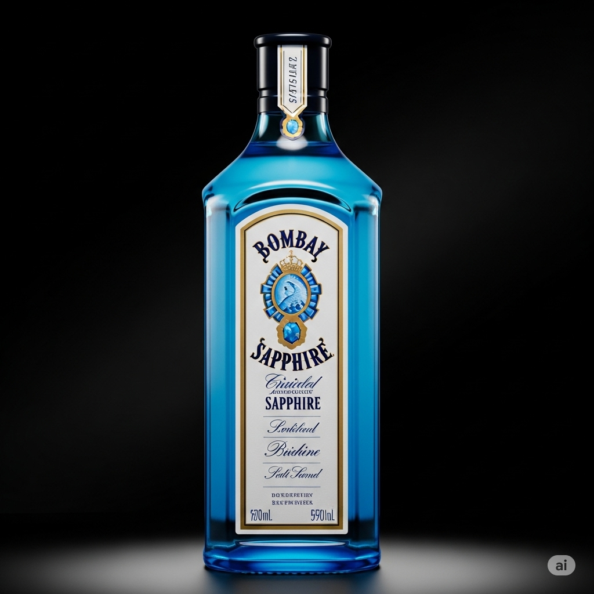

Bombay Sapphire
Origin: England
Discover the world-famous Bombay Sapphire, a gin renowned for its crisp, balanced flavor and iconic blue bottle.
Crafted with ten hand-selected botanicals from around the globe, it delivers a smooth, aromatic experience that’s perfect for classic cocktails or sipping with tonic.
Elevate your evenings with a gin that’s as beautiful as it is delicious!
Signature Cocktail: Bombay Sapphire & Tonic
- 50ml Bombay Sapphire Gin
- 100ml premium tonic water
- Fresh lime wedge
- Ice cubes
Instructions: Fill a glass with ice, pour in Bombay Sapphire, top with tonic water, and garnish with a fresh lime wedge. Enjoy the refreshing botanicals in every sip!